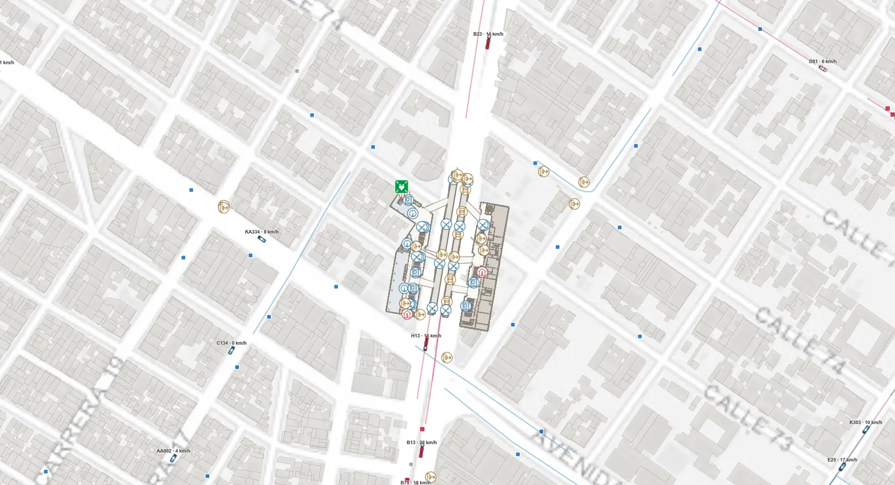

Metro de Bogotá · estaciones Calle 63 y Calle 72
De los modelos BIM a una estación navegable
Revit · ArcGIS Indoors · Network Analyst · Velocity · Python
Parte de mi cargo actual de ingeniería de soluciones SIG · nov 2026- Desafío
- Las dos estaciones existían solo como modelos de arquitectura y estructura. No se podía preguntar cómo llegar del acceso a la plataforma, ni en silla de ruedas.
- Mi parte
- Tres piezas puntuales: la red peatonal con dos modos (caminando y silla de ruedas, sin escaleras), la escena 3D con el terreno ajustado a las cotas reales, y la capa de buses en tiempo real desde el feed abierto de la ciudad.
- Resultado
- Visor 2D/3D, tableros y mapa móvil con ruteo entre estaciones: unos 12 minutos de acceso a acceso a pie y 14 en silla, con 178 recintos alcanzables en el modelo.
- Límite
- Las rampas y salvaescaleras que faltaban en el BIM van marcadas como propuestas. Los tiempos son del modelo, no medidos en sitio.




Apps públicas: centro del gemelo digital ↗ · tableros: accesibilidad ↗ · inventario ↗ · mantenimiento ↗ · flujo de pasajeros ↗